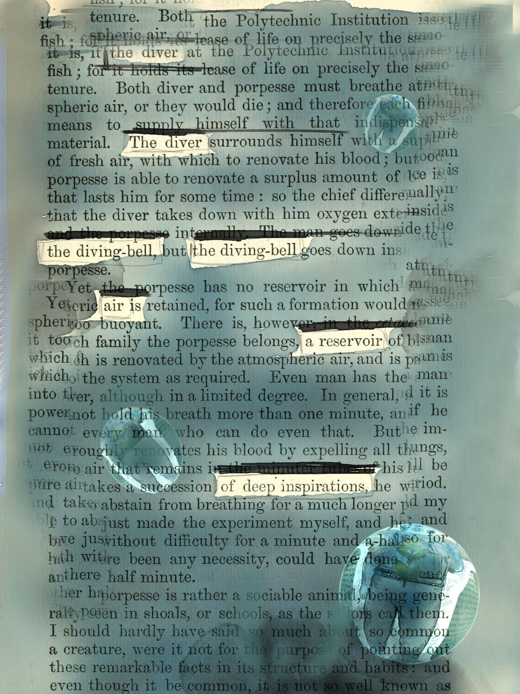
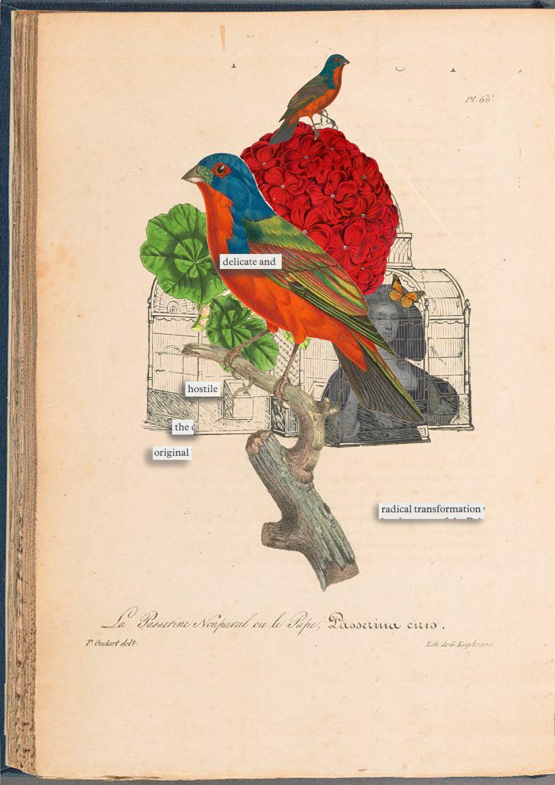

An erasure poem keeps two stories legible: the full text beneath the wash, the selected text above it, echoing the layered stories told by data and by humans.

Listening to data and the people it represents.
In 2025 I developed and delivered a substantial piece of policy work for a specific college. This case study outlines my working methods as an example of how I design bespoke creative consultations and bespoke solutions for complex institutions; ensuring stakeholders are meaningfully consulted and strategic actions arising are humane as well as evidence based.
Higher Education policy demands strict adherence to a methodology set by external sector regulators which lean on data science methods to identify stakeholder characteristics that might signify risk. As a diverse sector, this can be complex and problematic for smaller institutions, who may be dealing with groups of 20 students rather than 2000 or even 200. Whilst using data is useful, it must be balanced by other methods to ensure that the data reflects lived experience and that the layers of stakeholder experience are not flattened, but are listened to, enrich the data, and inform what might happen moving forwards.
An erasure poem keeps two stories legible: the full text beneath the wash, the selected text above it, echoing the layered stories told by data and by humans.
I went to where students thrived; in their studio spaces, with their teachers. I visited every course delivered in the college, rather than asking stakeholders to give up their time to attend meetings. I was welcomed into every space.
This helped me to pace the consultation according to when I was able to see different student groups. The first student groups were asked to look at the findings from the abstract data, and tell me how far they agreed, or what might have been missed out. The later student groups acted as critical friends, checking whether they felt the possible actions arising 'from' the data were appropriate, meaningful, and humane.
The consultation is cited in the college's published Access and Participation Plan 2025–29, which notes that dataset findings were triangulated with course leader consultation and a student consultation. I carried out the full process — from data analysis through consultation design and delivery to the writing of the plan itself, having critical feedback from governing bodies at the end of the writing.
The truth lies both in the full text and in the hidden text.
The consultation showed that students agreed with the data findings, but also wanted another layer; different stories and classifications, grown in place rather than in a centralised space.
Structurally, this was called out in critical feedback from the college's governing body as well as on the ground. Students rejected simplistic 'labels', wishing for more control around how they were categorised.
The college's strategic plan was approved, and a network of support is being developed, with study skills drop-in support and reaching out to graduate stakeholders to support cross-pollination of ideas between students and creative professionals.
Four erasure poems, made from four Victorian source texts on clouds and their forms. The words that survive the wash don't just remain legible — they scan as sapphic stanzas: three long lines and a short one, a metre nobody set out to write, found already sitting inside the source. Each panel below holds two datasets at once: the sapphic drawn out, and the text it was drawn from. Classification and identification change the meaning of a text; two meanings can co-exist.
 twisted, tangled, skeleton of crystal, wisps
Source: a Victorian cloud classification
twisted, tangled, skeleton of crystal, wisps
Source: a Victorian cloud classification
 water, cloudscapes, skies of a sublime spirit
Source: a Victorian cloud classification
water, cloudscapes, skies of a sublime spirit
Source: a Victorian cloud classification
 ghostly velum, form s like a dance, a vortex
Source: a Victorian cloud classification
ghostly velum, form s like a dance, a vortex
Source: a Victorian cloud classification
 nacreous... wave rs
Source: a Victorian cloud classification
nacreous... wave rs
Source: a Victorian cloud classification
Read in sequence, the four panels form one stanza: twisted, tangled, skeleton of crystal, wisps — water, cloudscapes, skies of a sublime spirit — ghostly velum, form s like a dance, a vortex — nacreous... wave rs. Three long lines, one short — a sapphic, found rather than written.
I design bespoke, human-centred ways for organisations to communicate complex information, engage stakeholders and gather meaningful insight. My work combines visual design, participatory research, data storytelling and creative practice to make information more accessible, compelling and useful.
The college was 170 years old in the year this project was successfully delivered — a child of the Victorian moment that built South Kensington, the government schools of design, and the Crystal Palace: the great glass machinery of collecting, classifying and displaying everything. The Office for Students dashboard is that machinery's descendant — the exhibition case, digitised. This consultation was, in one sense, an act of removing the glass: stepping out from behind the vitrine of the data and into the studios, so that the people the record describes could touch the instrument, and talk back to their own catalogue entry.

Elsewhere in this practice the glass behaves differently. Minor Deities holds its subjects under glass — the slide, the specimen, seen but fixed. Botanica strains against it — the terrarium, the sewing box that cannot quite contain what lives. Here, the glass comes off. One question, three materials: the photograph, the plant, the spreadsheet.
When Botanica launches in September it asks the public the same question this consultation asked students, but this time using plants as a visual metaphor: how would you like to be represented as data? I am genuinely excited to find out what they say.